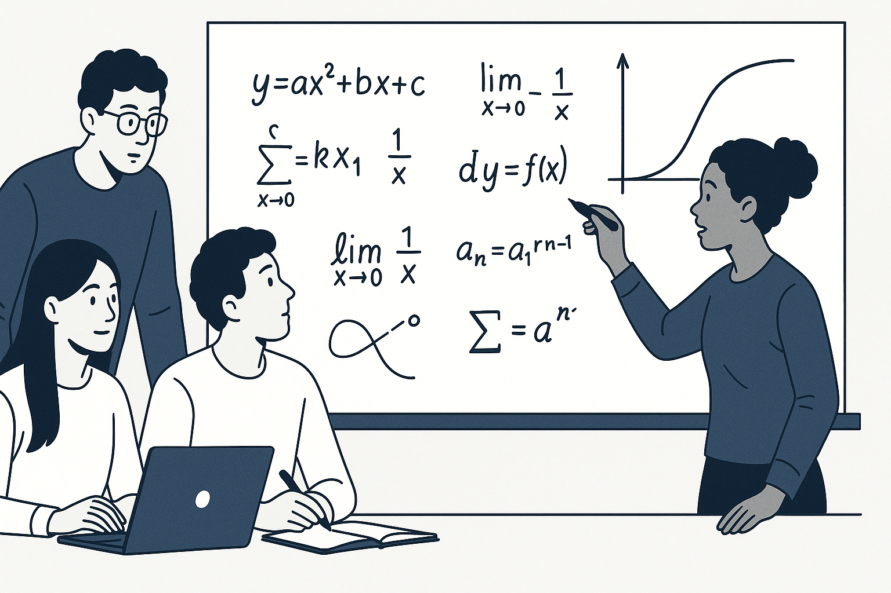

El modelado matemático es fundamental en múltiples campos científicos:
- Investigación biológica para comprender patrones de crecimiento
- Desarrollo farmacéutico para predecir efectos de antibióticos
- Control ambiental para gestionar ecosistemas
- Programación de simulaciones como habilidad crítica para futuros científicos e ingenieros
